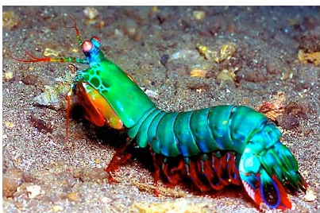
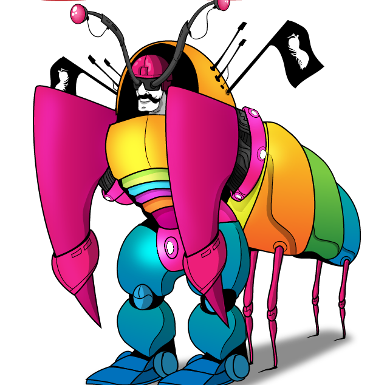
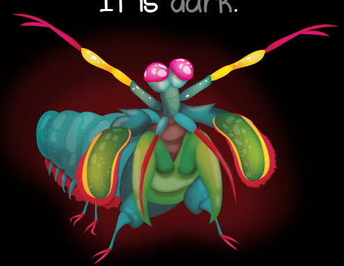

Stomatopoda
Fatos sobre o Stomatopoda
Odontodactylus scyllarus
Eyes are testaments to evolution’s creativity. They all do the same basic things—detect light, and convert it into electrical signals—but in such a wondrous variety of ways. There are single and compound eyes, bifocal lenses and rocky ones, mirrors and optic fibres. And there are eyes that are so alien, so constantly surprising, that after decades of research, scientists have only just about figured out how they work, let alone why they evolved that way. To find them, you need to go for a Odontodactylus scyllarus
Body Armor
Their Limbs are so resilient
Bealtfull
Your eyes is very magnificient, and see multiple colors, more than rainbow